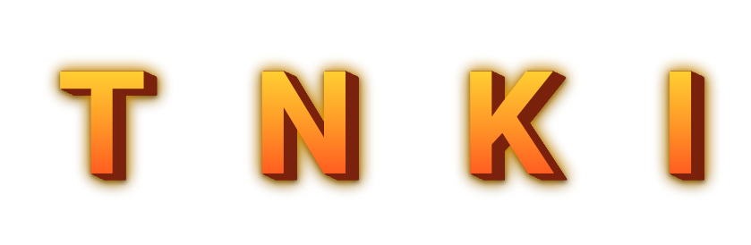
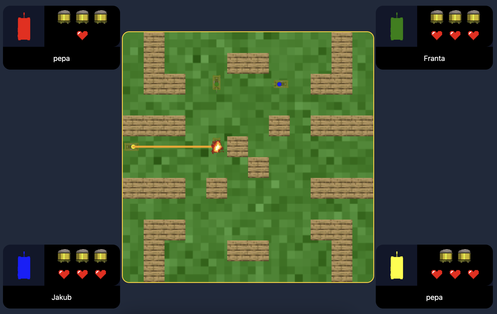

TNKI


TNKI je real-time multiplayerová hra založená na websocketech. Avšak, protože zábava je v programování, a ne ve hraní hry, dostanete pouze repozitář se základní funkcionalitou a bude na vás hru dokončit. Hra každého z vás může být unikátní a obsahovat různé herní mechaniky.
Repozitář: https://github.com/kpostrava/tnki
💡 Pro snadnější oriantaci v kódu si do vscode nainstaluje rozšíření “better comments”: https://marketplace.visualstudio.com/items?itemName=aaron-bond.better-comments
Popis kódu
Datová struktura asociativní pole (hashmap)
const map_id_room = new Map();
V asociativním poli map_id_room používáme id tanku jako klíč a název místnosti jako hodnotu. Při každém připojení tanku do roomky zároveň do tohoto asociativního pole přidáme nový záznam.
Tímto máme zajištěno, že kdykoliv v programu můžeme okamžitě zjistit v jaké místosti se tank nachází. Naopak při odpojení tanku je důležité, abyste tank z tohoto pole smazali!
const map_id_room = new Map(["id1", "místnost1"], ["id2", "místnost2"]);
map_id_room.set("id3", "místnost3"); //přidání záznamu s klíčem "id3"
console.log(map_id_room.get("id2")); //načtení záznamu podle klíče - vypíše "místnost2"
map_id_room.delete("id1"); //smazání záznamu s klíčem "id1"
Příklad zapsání a získání dat z asociativního pole.
const map_key_value = new Map([
["ArrowUp", { x: 0, y: -1 }],
["ArrowLeft", { x: -1, y: 0 }],
["ArrowDown", { x: 0, y: 1 }],
["ArrowRight", { x: 1, y: 0 }],
]);
Dalším příkladem asociativního pole je map_key_value. Umožňuje nám najít podle názvu klávesy koeficienty pro pohyb po jednotlivých osách.
Server:
Třídy:
Room - Jeden server může hostovat více her součásně, každá hra má svou instanci třídy Room.
Každá instance má svůj unikátní identifikátor - room_name, který se následně používá v asociativních polích pro její identifikaci.
Konstruktor potřebuje session_id tanku, který místost vytvořil. Tank který místnost vytvořil, maximální počet hráčů, název místnosti a herní mapu.
Třída Room také obsahuje vlastní asociativní pole “tanks”. Toto pole slouží k rychlému přiřazení session_id ke konkrétní instance třídy Tank.
Maximální počet hráčů a jméno místnosti zadává uživatel do formuláře na domovské stránce. Session_id pocházi ze socketio. tank je instance třídy Tank.
class Room {
started = false;
tanks = new Map();
constructor(session_id, tank, max_players, room_name, game_map) {
this.admin = session_id;
this.max_players = max_players;
this.room_name = room_name;
this.game_map = game_map;
this.tanks.set(session_id, tank);
map_id_room.set(session_id, room_name);
}
join(session_id, tank) {
this.tanks.set(session_id, tank);
map_id_room.set(session_id, this.room_name);
}
tanks_length() {
return this.tanks.size;
}
}
Tank - Každý hráč má svou instanci. Všechny tanky musí patřit nějaké instanci třídy Room.
Konstruktor potřebuje:
index tanku - získáme voláním tanks_length() na instanci Room, do které daný tank patří.
player_name - zadává uživatel do formuláře na domovské stránce
session_id - pochází ze socketio
Navíc každá instance třídy tank obsahuje informace o aktuální poloze tanku a jeho barvu.
class Tank {
constructor(index, player_name, session_id) {
this.x = start_positions[index].x;
this.y = start_positions[index].y;
this.color = colors[index];
this.player_name = player_name;
this.index = index;
this.session_id = session_id;
}
validate_move(coords) {}
move(key, shift) {}
shoot() {}
}
websockety
Veškerá komunikace klient/server je zprostředokována pomocí websocket.
Například při kliknutí na talčitko create room na domovské stránce. Se emitne event.
socket.emit("create_room", {
room_name: room_name,
max_players: max_players,
player_name: player_name,
});
Server na něj umí reagovat:
io.on("connection", (socket) => {
socket.on("create_room", (msg) => {
console.log(msg);
});
socket.on("join_room", (msg) => {
})
Stejným způsobem to funguje i opačným směrem.
Klient
Změna obrazovek
Pro snadné přepínání mezi obrazovkami - home, lobby, game, máme implementovanou jednoduchou funkci:
const screens = ["home", "lobby", "game"];
const set_screen = (visible_screen) => {
screens
.filter((hidden_screen) => hidden_screen != visible_screen)
.forEach((hidden_screen) => {
document.getElementById(hidden_screen).classList.add("hidden");
});
document.getElementById(visible_screen).classList.remove("hidden");
};
Jako argument posíláme název obrazovky.
set_screen("lobby");
Můžeme takto jednoduše přepínat obrazovky. Pokud chcete přidat vlastí obrazovku stačí jí jen přidat její id do pole a přidat jí do html.
Uživatelské vstupy
V základu aplikace používá šipky pro pohyb, shift pro rotaci a mezerník pro střelbu. Pokud je některá z těchto kláves stisknuta, informujeme o tom server. Zároveň voláme metodu preventDefault(), která zabrání například nechtěnému posunu obrazovky v důsledku stisknutí šipky dolů.
const move_keys = ["ArrowUp", "ArrowLeft", "ArrowDown", "ArrowRight"];
document.onkeydown = (e) => {
if (move_keys.includes(e.code)) {
e.preventDefault();
socket.emit("update_move", { key: e.code, shift: e.shiftKey });
return;
}
//? Líbí se ti střelba při klávese "space"? Pokud ne, můžeš ji libovolně měnit!
if (e.code == "Space") {
e.preventDefault();
socket.emit("update_shoot");
}
};
Indikátory
Slouží k ukazování hráčů ve hře, jejich životů a nábojů. Při změně stavu nábojů, či životů je nutná jejich ruční aktualizace. Pomůže nám k tomu funkce set indicator:
const set_indicator = (index, value, type) => {
const indicator = document.querySelector(`#indicator_${index} .${type}`);
indicator.innerHTML = "";
for (let i = 0; i < value; i++) {
indicator.innerHTML += `<img src="assets/${type}.png" class="w-8 h-8" />`;
}
};
Aktualizaci pak můžeme udělat velmi snadno.
set_indicator(tank.index, 3, "ammo");
set_indicator(tank.index, 3, "health");
Úkoly
Server:
- Změnit mapu (* generovat novou / upravenou pro každou hru)
- Implementovat kolize -
- S okraji mapy (*dynamicky v závislosti na velikosti mapy)
- S barikádami
- Přidat třídě tank potřebné atributy - životy, náboje, směr (*vlastní atributy pro dalši herní mechaniky)
- Ověření dostatku nábojů při střelbě
- Trajektorie střely ve směru tanku
- Detekce zásahu tanku střelou
- Ubrání života při zásahu
- Ubrání náboje při střelbě
- Domplňování munice všech hráčů v pravidelných intervalech
- Stisknutím šipky společně s klávesou shift rotovat tank
- Logika odpojování hráčů
- Oznámení výhry / prohry
- Validace vstupů pro udáje nutné k vytvoření / připojení do místosti
Klient
- Vlastní textury
- Měnit texturu / rotaci textury na základně atributu směru ⇒ tank se natáčí ve směru pohybu
- Textura výbuchu při zasažení hráče
- Tlačítko pro odpojení z místnosti v čekacím lobby
- Reakce na odpojení hráče ze hry (smrt, problém s připojením) - Skrýt jeho indetifikátor a odstranit ze seznamu hráčů
- Naimplementuj event handler, který aktualizuje stav nábojů na indetifikátorech
- Funkce pro reset stavu hry pro jejím skončení
- Oznámení výhru / prohry například na eventu win / lost
Bonusové
- -
- Změň ovládání ze šipek a mezerníku například na wsad a enter
- Vymysli vlastní typ nábojů, například: splash demage, procházení barikádami, odrážení, více směrné
- Generuj na mapě náhodně bonusové životy / náboje
- Nastavení velikosti hracího pole adminem při vytváření roomky
- Vymysli něco nového!